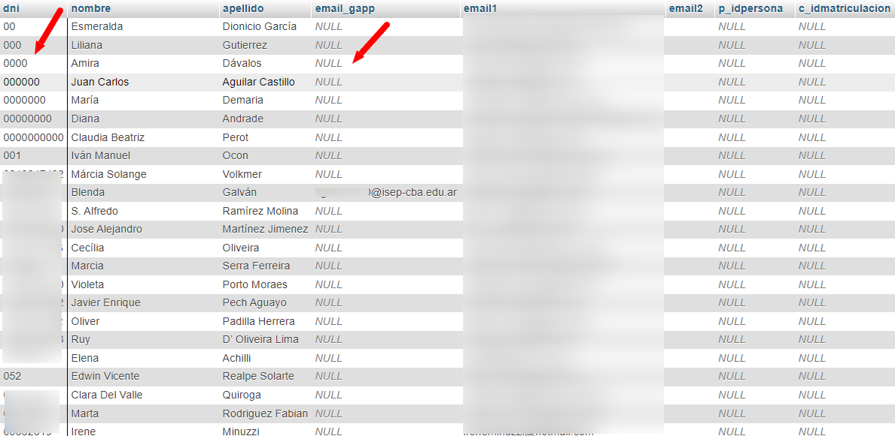

flowchart LR
C{"¿Tengo el dato del nombre?"}
C-- Sí -->D["Estimado {nombre}, ..."]
C-- No -->E["Estimado docente, ..."]
Propuesta de adaptación BD masiva a desarrollo actual del módulo de campañas
ETL
Para la generación de la BD de mails masiva se llevó a cabo una tarea de ETL (Extracción, transformación, carga) de datos.
- Extracción de datos de mails (y otros atributos) de las distintas fuentes existentes y presentadas.
- Transformación de los datos que implica la limpieza y procesamiento de los mismos, por ejemplo normalización de atributos, verificación de mail, etc.
- Carga de los datos transformados y unificados en una tabla (con esquema desnormalizado), en donde los mails son un índice único.
DIAGRAMAS
AUTOMATIZACIÓN CÓMO TAREA FALTANTE
Conjuntos de destinatarios
De acuerdo a los requerimientos que nos pasaron en su momento, debemos considerar los siguientes conjuntos de destinatarios:
- Inspectores generales y supervisores de nivel Inicial
- Directores de escuelas de niveles Inicial
- Inspectores generales y supervisores de nivel Primario
- Directores de escuelas de niveles Primario
- Inspectores generales y supervisores de nivel Secundario
- Directores de escuelas de niveles Secundario
- Inspectores generales y supervisores de nivel Superior
- IFD públicos de toda la provincia (se pueden segregar por departamento, ciudad y carreras que dictan)
- IFD privados de toda la provincia (se pueden segregar por departamento, ciudad y carreras que dictan)
- Base de inglés: todas las personas que tengan cargado que dan inglés en nuestra base de datos; todos los profes que dan inglés en Jornada Extendida (base externa); toda la gente de la comunidad de prácticas que de inglés; toda la gente que se cursó los Ateneos de inglés; todas las personas que se anotaron a conversatorios de inglés; todas las bases de datos que tengan el programa Entre Lenguas.
- Base masiva: armar una nueva que traiga: personas (autogestión), inscriptos a eventos (no repetidos en Personas); personas que se suscriben en el portal y HE; bases de datos externas (supervisores, directores de escuelas).
- Base HE, separada por niveles. Todos los que se suscribieron de acuerdo al nivel que hayan indicado; todas las personas de la base ISEP de la que podemos rastrear el nivel de desempeño.
Por orden de prioridad y necesidad, arrancaremos por el grupo destinatario más grande: destinatarios para campañas masivas.
Destinatarios para campañas masivas
De acuerdo a lo anterior, se pide que el listado de destinatarios esté conformado por:
personas (autogestión), inscriptos a eventos (no repetidos en Personas); personas que se suscriben en el portal y HE; bases de datos externas (supervisores, directores de escuelas).
Pero antes repasemos la consulta que actualmente está siendo utilizada para este tipo de campañas:
SELECT `dni`, `nombre`, `apellido`, `emails` as `email1`,
'' as email2, `email_gapp`, `personas`.`idpersona` as `p_idpersona`,
0 as `c_idmatriculacion`
FROM `personas`
WHERE `emails` NOT IN (select email1 from mailing_altasbajas where tipo="baja")
AND `email_gapp` NOT IN (select email1 from mailing_altasbajas where tipo="baja")
AND personas.idpersona NOT IN (SELECT `idpersona`
FROM `mailing_destinatarios`
WHERE `idcampania` = '1956')
union
SELECT '' as dni, `nombre` as `nombre`, `apellido` as `apellido`,
`email1` as `email1`, `email2` as `email2`, '' as email_gapp,
0 as `p_idpersona`, 0 as `c_idmatriculacion`
FROM `mailing_altasbajas`
WHERE `tipo` = 'alta'
AND `categoria` = 'Suscripción voluntaria'
AND `email1` NOT IN (select email1 from mailing_altasbajas where tipo="baja")
Nota
Como se puede observar, esta consulta únicamente considera el grupo de personas de autogestión y suscripciones voluntarias, haciendo que el “alcance” o “llegada” sea menor a lo que se propone en este tipo de campañas “masivas”. Por otro lado como se analizó en su momento, únicamente (y mayoritariamente) se está llegando a docentes que ya han interactuado con al menos una propuesta en el ISEP.
A continuación se indica la disponibilidad de cada una de las columnas en la nueva BD de mails:
dni(sólo si se tiene el dato de la fuente de origen, por ejemplo, las cuentas que se obtienen de autogestión sí cuentan con este campo)nombre(casi siempre, ídemdni)apellido(casi siempre, ídemdni)email1(se hace la suposición de que este campo es el “mail personal”, siempre va a estar disponible)email2(al parecer este campo no se utiliza)email_gapp(el correo institucional, sólo para personas que han interactuado con alguna propuesta del ISEP)p_idpersona(ídememail_gapp, este campo actualmente no existe en la BD de mails, se puede considerar sumar este atributo… ¿se utiliza?)c_idmatriculacion(al parecer este campo no se utiliza)
En base a lo anterior debemos analizar también qué campos se pueden “quitar” en la nueva consulta y cuales permanecen. Para esto debemos evaluar si el módulo “exige” la existencia de ciertos atributos o no:
- ¿Cuáles son obligatorios?
- ¿De cuáles podemos prescindir?
- ¿Las campañas masivas hacen uso de todos esos atributos? ¿Se usa el nombre? ¿Se usa el apellido?
A veces este tipo de preguntas sumadas a la propuesta de un esquema nuevo de BD, nos llevan a evaluar la necesidad de agregar nueva lógica o bien, modificar la actual, cómo por ejemplo para el caso del atributo nombre:
Esto al momento de “renderizar” la plantilla o cuerpo del mail con los datos correspondientes. Pero obviamente esto queda sujeto a debate.
Volviendo al caso, la fuente de mails masiva tiene la particularidad de que podemos agrupar cuentas por DNI pero, como se indicó anteriormente, este atributo no figura en todas las fuentes originales. Debido a esto se proponen dos grupos que luego serán unificadas.
- Con el dato DNI: se agrupan las cuentas en base a este atributo para identificar aquellas que pertenecen a una misma persona. Este grupo contempla (o contiene) las cuentas de personas que han pasado por el ISEP, es decir, contiene en su mayoría al conjunto de cuentas que estaba siendo utilizado en las campañas masivas hacia finales del 2023. Pero también pueden ser cuentas de personas que no interactuaron con el ISEP y por lo tanto no tienen el dato de cuenta institucional, pero sí el personal.
- Sin el dato DNI: lo que se considera como “el resto”. Cuentas de otras fuentes que no contengan el dato de DNI y que, por lo tanto, no podemos identificar la persona a la que pertenece y de esta forma agruparlos.
Recordemos que ya que la fuente de mails tiene como base la característica de unicidad en las cuentas de correo, sabemos que en los grupos que se generen no va a haber cuentas repetidas (tanto al interior como entre grupos). Ojo!! que esto no nos asegura que un mail que exista en el segundo grupo no pertenezca a una persona del primero pero al no tener el dato de DNI, no lo podremos saber.
Nota
El autor considera que no tiene sentido armar una heurística avanzada que permita unificar mails en base a otros atríbutos ya que es un trabajo que lleva su tiempo y esto sólo justifica un esquema en que los registros son personas únicas.
Para el autor, cada registro en la BD masiva es una cuenta de correo única con los atributos que hacen de metadato para conocer un poco más sobre el origen de la cuenta. De esta forma, se puede decidir cómo proceder en agrupar o generar “bolsas” de cuentas a las cuales enviar campañas.
Es una de las tantas formas de abstraer el problema.
Importante
El desarrollo de la fuente de mails masiva, contempla la idea GIGO (garbage IN, garbage OUT), “basura entra, basura sale”. En ese sentido si la fuente de origen tiene errores o inconsistencias, las mismas se verán reflejadas en las fuentes resultantes (o analíticas). Esto viene al caso por un error que se detectó hace poco sobre dos persona (de la tabla personas, fuente de origen) que compartían el mismo DNI. Esto se vió reflejado en la BD de mails ya que no permite identificar a qué persona corresponde la cuenta y por lo tanto el proceso de unificar resuelve de manera errónea para estas dos cuentas.
El desarrollo de este tipo de fuentes o data warehouses, generalmente considera que las fuentes de origen son lo suficientemente robustas, consistentes y entonces sólo se enfoca el trabajo en normalizar o limpiar datos, pero no en corregirlos.
Grupo 1
Tomando cómo referencia las columnas de la consulta actual para destinatarios de campañas masivas:
-- REGISTROS QUE CUENTAN CON EL DATO DE DNI
SELECT mas.dni,
mas.nombre, mas.apellido,
max(if(mas.cuenta_institucional=1,mas.email,NULL)) as email_gapp,
max(if(mas.cuenta_institucional=0,mas.email,NULL)) as email1,
'' as email2, NULL as p_idpersona, NULL as c_idmatriculacion
FROM campanias_cuentas_masiva as mas
WHERE mas.dni IS NOT NULL and mas.suscripcion="si"
GROUP BY mas.dni;hemos conservado los mismos campos pero con algunas consideraciones:
p_idpersonaahora esNULLc_idmatriculacionahora esNULL
Por otro lado, como se puede notar en los primeros registros que devuelve la consulta:

algunos DNI tienen un formato incorrecto: algunos con pocos dígitos, en otros todos los dígitos son cero, otros empiezan por cero, etc. Esto es consecuencia de la idea GIGO (basura entra, basura sale). Las fuentes de origen tienen el dato de DNI mal formateado, sin verificación, etc. Sin embargo el mail asociado (el personal) es correcto (al menos estructuralmente o en términos de sintaxis). A raíz de esto se recomienda revisar las reglas de verificación en las distintas fuentes que admiten el dato de DNI a partir de formularios. Por otro lado se puede revisar el tipo de dato en las tablas de la BD.
Se proponen 2 opciones:
- Se deja tal como está: sabemos que la cuenta está bien y el campo DNI no es relevante en el envío de campañas, sólo es útil para agrupar cuentas asociadas a una misma persona. Esto se corrige automáticamente, al corregir la fuente de origen (GIGO).
- Se hace un filtro posterior, dejando únicamente los registros con el campo DNI “correcto”. Esto va acorde a la “cultura” del parche constante.
En este caso se procede con la opción número 1.
Grupo 2
-- REGISTROS QUE NO CUENTAN CON EL DATO DE DNI
SELECT mas.dni,
mas.nombre, mas.apellido,
if(mas.cuenta_institucional=1,mas.email,NULL) as email_gapp,
if(mas.cuenta_institucional=0,mas.email,NULL) as email1,
'' as email2, NULL as p_idpersona, NULL as c_idmatriculacion
FROM campanias_cuentas_masiva as mas
WHERE mas.dni IS NULL and mas.suscripcion="si";Este grupo contiene muchos menos registros que el primero. Algunas observaciones sobre este grupo:
- Ningún registro tiene el dato de
email_gapp(o cuenta institucional). - Se puede observar que varios registros no tienen el dato de Nombre y/o Apellido
Unificación de grupos
Finalmente se procede con la unión de ambos grupos para la consulta definitiva:
-- GRUPO 1
SELECT mas.dni,
mas.nombre, mas.apellido,
max(if(mas.cuenta_institucional=1,mas.email,NULL)) as email_gapp,
max(if(mas.cuenta_institucional=0,mas.email,NULL)) as email1,
'' as email2, NULL as p_idpersona, NULL as c_idmatriculacion
FROM campanias_cuentas_masiva as mas
WHERE mas.dni IS NOT NULL and mas.suscripcion="si"
GROUP BY mas.dni
UNION
--GRUPO 2
SELECT mas.dni,
mas.nombre, mas.apellido,
if(mas.cuenta_institucional=1,mas.email,NULL) as email_gapp,
if(mas.cuenta_institucional=0,mas.email,NULL) as email1,
'' as email2, NULL as p_idpersona, NULL as c_idmatriculacion
FROM campanias_cuentas_masiva as mas
WHERE mas.dni IS NULL and mas.suscripcion="si";